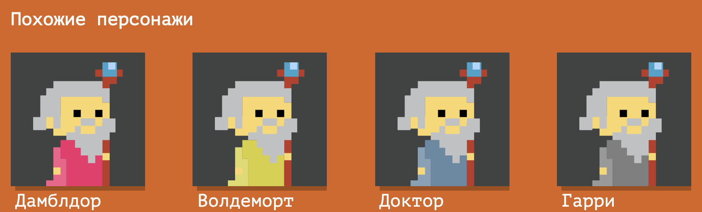

6.7. Шаблоны и данные
Начнём с определений. Шаблон — некоторая оболочка для данных, разметка, любой способ отобразить информацию. Шаблон никогда не несёт содержательной информации.
Данные — информация, которую вводит пользователь, присылает сервер или которая может быть сгенерирована компьютером.
Данные не должны повторять шаблон, они должны описывать параметры сущностей, которыми мы оперируем. Простой способ отделить шаблон от данных — попробовать изменить одно или другое.
Например, использовать иной способ отображения данных (отобразить товары в линейку вместо списка) или изменить отображаемую информацию (описать не утюг, а пылесос). Допустим, у нас есть структура, описывающая логотип:
const header = {
logo: {
src: `logo.png`,
width: 100,
height: 30
}
};
С первого взгляда можно подумать, что это данные, однако, такую информацию неправильно хранить как данные. Эта информация описывает логотип, расположенный в шапке, она не приходит с сервера, не вводится пользователем, возможно, эта информация никогда не поменяется. Поэтому данная информация не является данными — это шаблон, который описывает, как некоторая сущность должна выглядеть. Данными могут быть: название компании, адрес, телефон и тому подобное.
Зачем отделять данные и шаблоны
Допустим, что у нас есть список некоторых продуктов интернет-магазина:
const products = [
{name: `Утюг`},
{name: `Чайник`},
{name: `Пылесос`},
{name: `Стиральная машина`},
{name: `Кухонный комбайн`},
{name: `Автомобиль`}
];
Дизайнер говорит нам, что в интерфейсе мы должны для некоторых пользователей показывать товары списком, а для других (кто хочет) сеткой. Неужели нам придётся заводить два одинаковых списка продуктов? Нет! Как раз список продуктов, приведённый выше, является данными, а способы показа товаров являются шаблоном.
Данные не должны меняться в зависимости от того, каким образом они должны отображаться. Шаблон отвечает за то, куда вставить данные — в элемент списка или элемент сетки.
Создание DOM элементов
DOM-элементы можно создать несколькими способами:
На основе разметки — в специальные места разметки в тексте разметки подставляются данные;
На основе строк;
Компилируемые шаблоны — использование сторонних библиотек, способных переводить некоторый язык в разметку;
На основе DOM-API:
На основе шаблонного элемента (template из WebComponents);
С помощью обёрток над шаблонами (Incremental DOM).
Рассмотрим разделение на шаблон и данные на примере. Допустим, у нас на странице есть следующий блок, показывающий нескольких волшебников:
Рисунок 1. Несколько волшебников
Как можно заметить, волшебники выглядят однотипно, то есть способ их отображения един и не меняется. Однако, некоторые параметры у них отличаются: имя и цвет мантии.
В данном примере разметка для каждого из волшебников является шаблоном и не несёт в себе информации, а лишь служит обёрткой для отображения данных. Разметка для каждого из волшебников (шаблон) имеет следующий вид:
В данном шаблоне нет конкретных данных, лишь способ отображения. В данный шаблон в нужные места можно подставить данные, нужные нам. Данные для нашего примера будут иметь следующий вид:
const wizards = [
{
name: `Дамблдор`,
coatColor: `rgb(241, 43, 107)`
},
{
name: `Волдеморт`,
coatColor: `rgb(215, 210, 55)`
},
{
name: `Доктор`,
coatColor: `rgb(101, 137, 164)`
},
{
name: `Гарри`,
coatColor: `rgb(127, 127, 127)`
}
];
Как видно, данные описывают параметры, изменяющиеся у различных волшебников.
Резюме
Важно уметь выделять данные и шаблоны. К данным можно отнести ту информацию, которая не влияет на способ отображения, соответственно, к шаблонам нужно отнести то, что описывает, как некоторые однотипные элементы могут быть отображены.
Простой способ отделить шаблон от данных — попробовать заменить их: изменить способ отображения данных или отображаемую информацию.